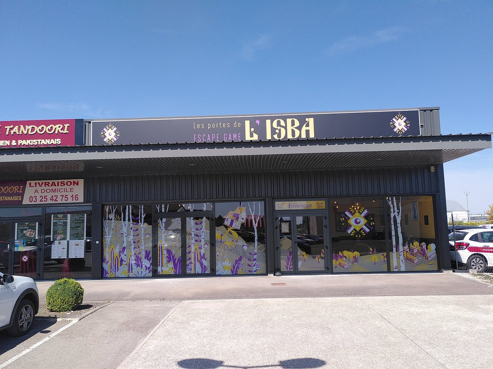

L'atmosphère de l'Isba


Folklore & Mystère
Plongez dans les légendes slaves qui ont inspiré notre univers.

L'isba (ou izba en russe) est la maison paysanne traditionnelle en bois de l'Europe de l'Est. Bien plus qu'un simple logement, elle occupe une place centrale dans la culture et le folklore slave.
Construite entièrement en rondins de bois assemblés à la hache, souvent sans clou, l'isba était à la fois foyer, temple domestique et espace de vie communautaire. Chaque recoin avait sa signification, chaque objet son histoire.
Dans la tradition slave, l'isba n'est jamais seule. Elle est habitée par le domovoi — l'esprit domestique, gardien du foyer. Invisible mais omniprésent, il veille sur la maison et ses habitants. Le choyer, c'est s'assurer la prospérité. L'oublier, c'est s'exposer à bien des malheurs.
Plus célèbre encore, Baba Yaga — la sorcière du folklore russe — habite une isba aux poulets comme pieds, perchée dans la forêt. Cette maison magique et terrifiante tourne sur elle-même, guidée par une volonté propre. Elle est le point de départ de nombreux contes : celui qui frappe à sa porte n'en ressort pas toujours vivant...
C'est de tout cet univers que nous nous sommes inspirés pour créer Les Portes de l'Isba. Un lieu chargé d'histoire, de mystère et de magie, où les énigmes s'entremêlent avec les légendes.
Chaque salle a été pensée comme un chapitre de ce folklore : objets authentiques, ambiances sonores enveloppantes, décors minutieusement réalisés. Quand vous poussez nos portes, vous entrez dans la légende.